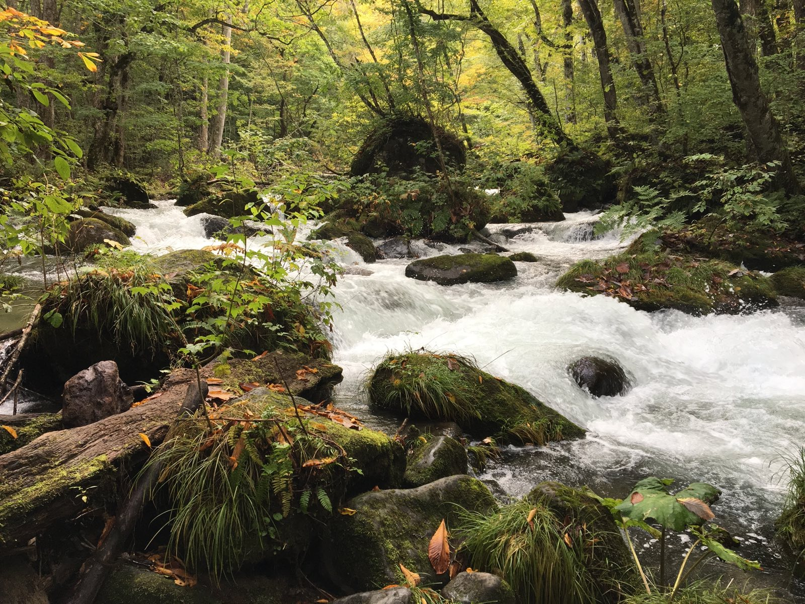
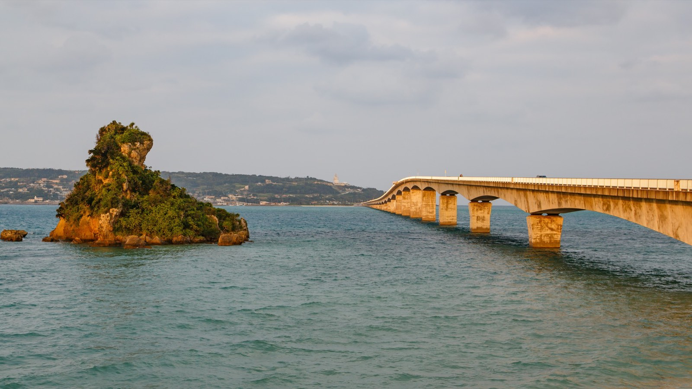

FIELD NOTES · TRAVEL JOURNAL
0 TRIPS · 0 COUNTRIES
我的旅遊足跡
探索世界的每個角落，記錄下每一段難忘的旅程。
🇯🇵日本JP
🇹🇭泰國TH
🇨🇳中國CN
🇮🇸冰島IS
FEATURE · 最新一篇
12°58′N 100°53′E
MARGINALIA · 隨手寫下的句子
金碧輝煌的廟宇，道地的街頭美食
— 曼谷
從繁華的都會區到靜謐的古老寺廟
— 東京
奧入瀨的碧水流光，松島的千島夕照
— 青森
讓極光、冰河與瀑布，寫下一封長信
— 冰島
CONTENTS · 其餘旅程
·
·
01
TH
BKK
BKK
熱帶浮光．曼谷夜色記
體驗微笑國度的熱情，參訪金碧輝煌的廟宇，享受道地的街頭美食與水上市場。
查看行程 →02
JP
TYO
TYO
落櫻若夢．東京剪影
探索現代與傳統交織的魅力，從繁華的都會區到靜謐的古老寺廟，感受東京的無限活力。
查看行程 →03

CN
HGH
HGH
煙雨入江南．杭州慢記
漫步西湖畔，遊覽靈隱寺與雷峰塔，感受人間天堂的詩意風光。
查看行程 →04

JP
AOJ
AOJ
東北秋色．青森物語
奧入瀨的碧水流光，松島的千島夕照，一場初秋東北的浪漫詩篇。
查看行程 →05

JP
OKA
OKA
御風向海・沖繩騎旅
海中道路的湛藍狂奔，古宇利大橋的絕景長風，一趟不瘋狂趕路的左駕環島騎旅。
查看行程 →06

JP
FUK
FUK
朱紅落葉・九州慢旅
佐賀的朱紅鳥居，豪斯登堡的璀璨花火，一場深秋九州的斑斕詩篇。
查看行程 →07

IS
KEF
KEF
在極光抵達以前．冰島詩篇
追光而行，讓極光、冰河與瀑布，寫下一封獻給冰島的長信。
查看行程 →沒有符合的行程，換個關鍵字試試。